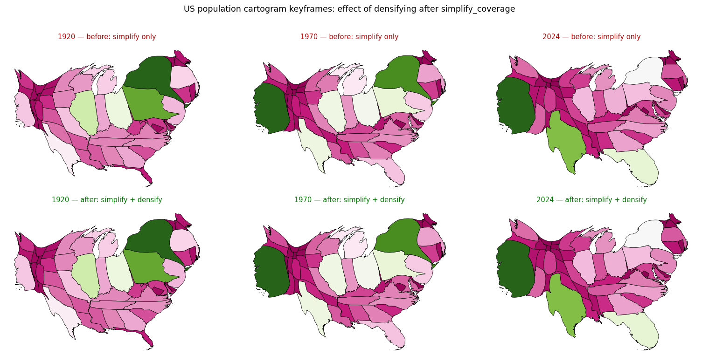

The example simplified to 5 km and never densified, leaving 519 km straight segments that cannot bend during the morph. 45 warnings across 22 keyframes, and invalid output geometry in every one of them. Densifying to 2 km cuts warnings to 1 and invalid polygons from 92 to 15, at no runtime cost.
The example simplified and never densified:
``python us_states = carto_flow.simplify_coverage(us_states, tolerance=5000) ``
simplify_coverage drops vertices along gentle boundaries. On this input it takes the longest straight segment from 5 km to **519 km** while cutting vertices from 34,510 to 6,752. A segment with no interior vertices cannot bend during the morph, which is exactly what the solver warns about - 45 times across the 22 keyframes.
The warnings are advisory, so the obvious reading is that they are noise. They are not. Checking the output geometry:
| invalid keyframes | invalid polygons | |
|---|---|---|
| before (simplify only) | **22 / 22** | **92** |
| after (simplify + densify 2 km) | 9 / 22 | 15 |
Every keyframe the example produced contained self-intersecting polygons. A segment that cannot bend folds over itself instead. This was severe enough that union_all() over a before-frame raises a GEOS TopologyException outright, which is how it surfaced while measuring.
Densification is not monotonic. Pushing it further removes the last warnings but makes the geometry worse:
| densify | vertices | warnings | invalid keyframes | invalid polygons | runtime |
|---|---|---|---|---|---|
| none (current) | 6,752 | 45 | 22 / 22 | 92 | 5.9 s |
| **2,000 m** | **54,650** | **1** | **9 / 22** | **15** | **5.9 s** |
| 1,000 m | 105,129 | 0 | 17 / 22 | 45 | 7.3 s |
| 500 m | 206,475 | 0 | 22 / 22 | 146 | 10.3 s |
Optimizing the reported symptom alone - the warning count - selects 1,000 m, which triples the invalid polygons against 2,000 m and costs 24% more runtime. Denser boundaries give the morph more vertices to fold over under strong distortion. 2,000 m is chosen on geometry validity, with the single remaining warning accepted.
Densifying to 2 km is free: 5.9 s for both, measured twice. Boundaries that can bend converge in fewer iterations, which pays for the extra vertices. The earlier measurement pass showed the densified variant slightly ahead (4.5 s vs 5.8 s); the two are within noise of each other, so the honest claim is no runtime cost rather than a speedup.
15 self-intersecting polygons remain across 9 keyframes, all of kind Self-intersection, concentrated in Michigan (4), Maryland (3) and Nevada (2), with Oregon, New Mexico, Idaho, Wyoming, New Jersey and Maine contributing one each. Michigan and Maryland are the two shapes most prone to this in every mosaic and flow test so far, so the residual looks like the known behavior of the morph under strong distortion rather than anything specific to this example. Reducing 92 to 15 is the scope of this change; driving it to zero is not, and would need work in the morph rather than in an example.
warnings, invalid keyframes and invalid polygons per setting.
ruff check and ruff format clean on the example.
Three of the 22 keyframes, before and after. The cartograms are substantively identical: the fix removes warnings and repairs geometry without changing what the example shows.